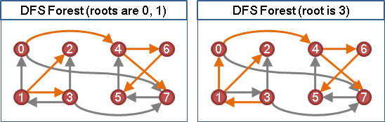
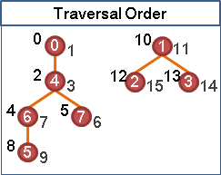
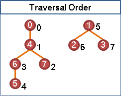
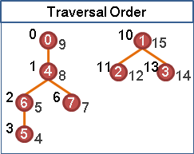

Graph Traversal: Depth-first Traversal
程度★ 難度★★★
Depth-first Traversal（Depth-first Search）（DFS）
DFS與BFS大同小異，只是把queue換成了stack而已。
遍歷順序示意圖：每個點進入與離開stack的時刻
每個點進入stack的時刻以左上深色數字表示，每個點離開stack的時刻以右下淺色數字表示。每個點都會進入stack一次、離開stack一次，不會再有第二次。
遍歷順序示意圖：每個點離開stack的時刻
只觀察離開stack的時刻，可以發現DFS優先走遍距離起點最遠之處，優先讓DFS Tree變得深遠，因而得名Depth-first Search。這個遍歷順序能夠解決許多圖論問題！
遍歷順序示意圖：每個點進入遞迴與離開遞迴的時刻
程式語言中的遞迴，其實就是利用stack來實做的。由於DFS操作stack的方式，就跟遞迴在操作stack的方式相同，所以DFS的程式碼也可以寫成遞迴形式。
請對照後面的「遞迴版本程式碼」小節。進入遞迴的時刻以左上深色數字表示，離開遞迴的時刻以右下淺色數字表示。這個順序用於解決一些特別的圖論問題。
製圖時，DFS Tree高度至少是三、分枝數目至少是三，比較容易觀察出遍歷順序。建議讀者也自己畫個圖、寫段程式研究一下。
邊的分類

藉由一叢DFS Forest，一張有向圖的邊可以分成四類：
Tree Edge：樹上的邊。 Back Edge：連向祖先的邊。（形成環） Forward Edge：連向子孫的邊。 Cross Edge：枝葉之間的邊、樹之間的邊。（可能形成環）
藉由一叢DFS Forest，一張無向圖的邊可以分成兩類：
Tree Edge：樹上的邊。 Back Edge：連向祖先的邊。（形成環）
這些邊的分類，可以協助我們解決複雜的圖論問題。
遞迴版本程式碼（adjacency matrix）
UVa 599 676 705 10004 10308 10505 10672 10938
延伸閱讀：其他Traversal方式
BFS： 不考慮邊的權重，先往「離第一點最近」的點 DFS： 不考慮邊的權重，先往「離第一點最遠」的點 無名： 先往「離第一點最近」的點 得到Shortest Path Tree 無名： 先往「離已走過的點最近」的點 得到Minimum Spanning Tree Maximum Adjacency Search： 先往「離已走過的點的距離總和最少」的點 得到Minimum s-t Cut Maximum Cardinality Search： 先往「離已走過的點的連接邊數總和最少」的點 為Maximum Adjacency Search的特例